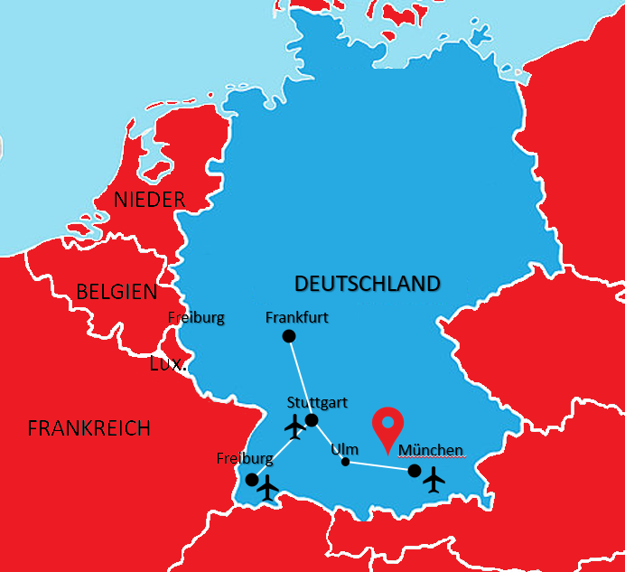

Home
Situation Géographique
Plan du site/Seitenverzeichnis
Nos activitées/Unsere Aktivitäten
Willkommen !
Le Water-park, le meilleur d'europe
Venez découvrir le Water-park !
Situé au bord de l'autoroute A8
München-Ulm
et des nombreux aéroports dans les villes alentours , il est plus facile d'accès que pour aller à Cormoz !

Venez découvrir toutes nos activités en famille !